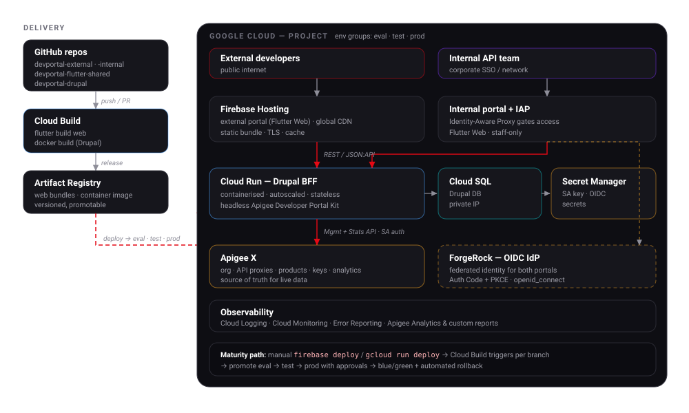

Deployment
How each tier is built, shipped, and operated on Google Cloud — now and as the platform matures.
Bottom line: the platform is GCP-native. Flutter Web ships to Firebase Hosting (the internal app additionally behind Identity-Aware Proxy); the Drupal BFF runs as a container on Cloud Run with Cloud SQL and Secret Manager; everything talks to the Apigee X org and federates identity with ForgeRock. Delivery starts as simple manual deploys and matures into gated, promotable CI/CD.
Topology#

What runs where#
| Tier | Service | Why |
|---|---|---|
| External portal | Firebase Hosting + CDN | Static Flutter bundle, global edge cache, free TLS |
| Internal portal | Hosting + Identity-Aware Proxy | Same bundle, staff-only — IAP enforces corporate identity at the edge |
| Drupal BFF | Cloud Run (container) | Stateless, autoscales to zero, pay-per-use, easy rollback |
| Database | Cloud SQL (private IP) | Managed Postgres/MySQL for Drupal |
| Secrets | Secret Manager | SA key + OIDC client secret, never in images or env files |
| Gateway | Apigee X | The API program itself (proxies, products, analytics) |
| Identity | ForgeRock (OIDC) | Federated, external to the portal |
How each tier is built & shipped#
Flutter Web (both portals)
flutter build web --release \
--dart-define=DATA_SOURCE=live \
--dart-define=API_BASE=https://portal-api.example.com
firebase deploy --only hosting:external # or hosting:internal
Drupal BFF (container)
gcloud builds submit --tag REGION-docker.pkg.dev/PROJECT/portal/drupal:TAG
gcloud run deploy drupal-bff \
--image REGION-docker.pkg.dev/PROJECT/portal/drupal:TAG \
--add-cloudsql-instances PROJECT:REGION:portal-db \
--set-secrets APIGEE_SA_KEY=apigee-sa:latest,OIDC_SECRET=oidc-client:latest \
--no-allow-unauthenticated
Environments#
Mirror the Apigee environment groups end to end — eval → test → prod —
so a change is proven before it reaches production. Each environment is its own
Cloud Run service, Hosting target, Cloud SQL instance, and Apigee env, parameterized
by --dart-define (front end) and Cloud Run config (back end). No code differs
between environments — only configuration.
Delivery maturity path#
The pipeline grows with the program; you don't need the end state on day one.
Manual
firebase deploy and gcloud run deploy by hand into eval. Fastest path to a live demo.
Triggered
Cloud Build triggers per branch/PR: build, test, and deploy to eval automatically.
Promoted
Promote the same artifact eval → test → prod behind manual approvals.
Safe
Blue/green or canary on Cloud Run with traffic splitting and automated rollback on health/SLO breach.
Promote artifacts, don't rebuild
Build the web bundle and the Drupal image once, tag them, and promote the exact same artifact through environments. Rebuilding per environment reintroduces the risk you were testing away.
Security posture#
- Internal portal behind IAP — no public route to the admin console; IAP checks corporate identity before the app loads. A VPC/VPN fronting is the stricter alternative.
- Service account is least-privilege — Apigee viewer/admin scopes only, key in Secret Manager, mounted to Cloud Run, never in the Flutter bundle (the browser must never hold it — that's the whole point of the BFF).
- Cloud Run is private —
--no-allow-unauthenticated; only Hosting/IAP and authorized callers reach it. Cloud SQL on private IP. - OIDC secrets in Secret Manager; redirect URIs locked to the deployed hostnames.
Observability#
- Cloud Logging / Monitoring / Error Reporting for the BFF and hosting.
- Apigee Analytics + custom reports for API traffic, latency, and errors — the same stats API the internal dashboards consume.
- Dashboards and alerts per environment; promotion gates can read SLOs.
Today vs. target
None of this is provisioned yet — the apps run from flutter run locally on
mock data. This page is the target operational model for Phase 5; it can be
stood up incrementally, starting with a single manual deploy to eval.